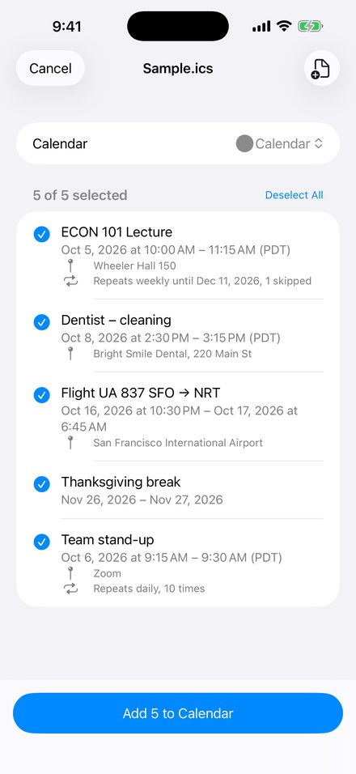
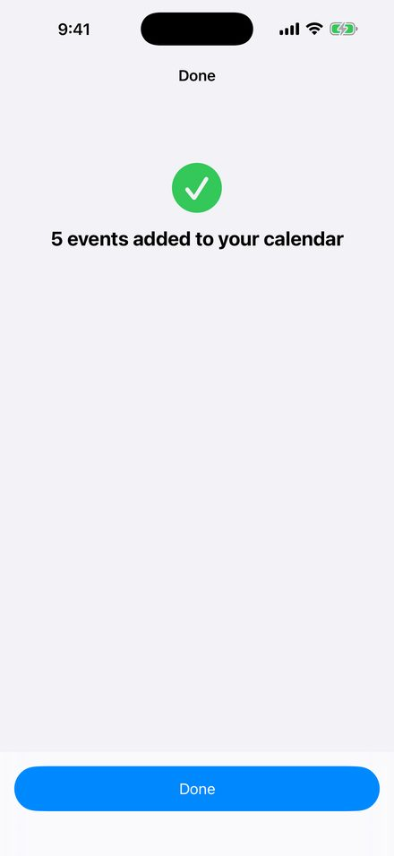

When you need it
- The file came through Gmail, Outlook, Spark, WhatsApp, Telegram or Messages and the share sheet has no Calendar option
- The Files app only shows a preview with no Add button
- The file holds a whole semester timetable or season schedule and you don't want to add events one by one
- An updated invite (same event, new time) refuses to import. ICS Import adds the new time; you delete the old one in Calendar
- The file came from Outlook or Exchange and the times come out hours off
What it does
- Reads the file on your phone. Nothing is uploaded, no account, no ads
- Shows title, time, place, repeat rule and reminders before anything is added
- Handles Windows time zone names like "Pacific Standard Time" and "(UTC+08:00)" labels
- Keeps repeat rules, skipped dates, changed occurrences and reminders
- Merges several .ics files into one list
- Remembers what it already added, so the same file twice doesn't create duplicates
- Write-only calendar access: it can add events but cannot read the ones you have
How to use it
- Tap the .ics file in Mail, Files, Safari, Messages or any other app
- Tap Share, then ICS Import
- Pick the events and the calendar, tap Add
Guides
- iPhone won't add an .ics file to Calendar: every fix
- Outlook .ics events show the wrong time on iPhone
Privacy policy
Last updated: 2026-09-17
ICS Import is an iPhone app that adds the events from .ics (iCalendar) files to your Apple Calendar. It is free to use for up to three events per import; a single one-time purchase removes that limit.
What the app does with your data
Everything happens on your phone. The app reads the .ics file you open, shows you the events in it, and adds the ones you pick to the calendar you choose. The file is not uploaded anywhere. The app has no servers, no accounts, no analytics and no advertising.
Calendar access
The app asks for write-only calendar access. That lets it add events and see the names of your calendars; it cannot read the events already in your calendar.
If a file removes single dates from a repeating event, the app asks once for full calendar access so it can delete just those dates. You can decline; the repeating event is then added without the removals. You can change either permission at any time in Settings > Privacy & Security > Calendars.
Data stored on your device
The app keeps a small local list of which file events it has already added, so opening the same file twice does not create duplicates. You can erase this list in the app's Settings screen. It is deleted when you uninstall the app.
Purchases
The one-time purchase is processed by Apple through the App Store. We never see your payment details. Use "Restore Purchase" in Settings to bring the purchase to a new phone signed in with the same Apple ID.
What we do not do
We do not collect, store, sell or share any personal data. There is no tracking of any kind.
Support
Something in a file did not import the way you expected? Email zhenyitong84@gmail.com and attach the .ics file if you can; most problems are fixed within a few days.
Common questions:
- The app is not in the share sheet. Tap the file first so iOS shows its preview, then use the Share button and pick ICS Import. If it is still missing, scroll the app row to the end and tap "More".
- Times are off by a few hours. The file probably used a time zone name iOS does not know. The app shows a note above the event list when that happens; email us the file and we will add the zone.
- Some dates of a repeating event should have been skipped. Allow full calendar access when asked, or remove those dates in Calendar by hand.